Theo Hội đồng Du lịch và Lữ hành Thế giới (WTTC) dự báo năm 2024, khách du lịch trên thế giới chi nhiều tiền hơn bao giờ hết và ngành du lịch sẽ đóng góp khoảng 10% tổng sản phẩm quốc nội (GDP) toàn cầu. Theo báo cáo của WTTC, đóng góp của ngành du lịch vào GDP toàn cầu năm nay sẽ tăng 12,1% so với năm trước lên 11.100 tỷ USD và tăng 7,5% so với mức kỷ lục trước đó được ghi nhận vào năm 2019. (Nguồn: vietnamplus.vn)
Cùng với sự phát triển nhanh chóng của ngành du lịch là sự xuất hiện ngày càng nhiều của hệ thống khách sạn và khu nghỉ dưỡng (resort) nhằm đáp ứng nhu cầu nghỉ dưỡng, giải trí và trải nghiệm của du khách.
Tuy nhiên, bên cạnh những lợi ích mang lại, sự phát triển ồ ạt này cũng kéo theo nhiều hệ quả tiêu cực đối với tự nhiên: ô nhiễm môi trường, khai thác tài nguyên quá mức, suy giảm đa dạng sinh học, và biến đổi cảnh quan. Ở nhiều điểm đến nổi tiếng như Bali (Indonesia), Phuket (Thailand), hay Maldives, áp lực từ du lịch đại chúng và sự dày đặc của resort ven biển đã đặt ra thách thức lớn cho mục tiêu phát triển bền vững.
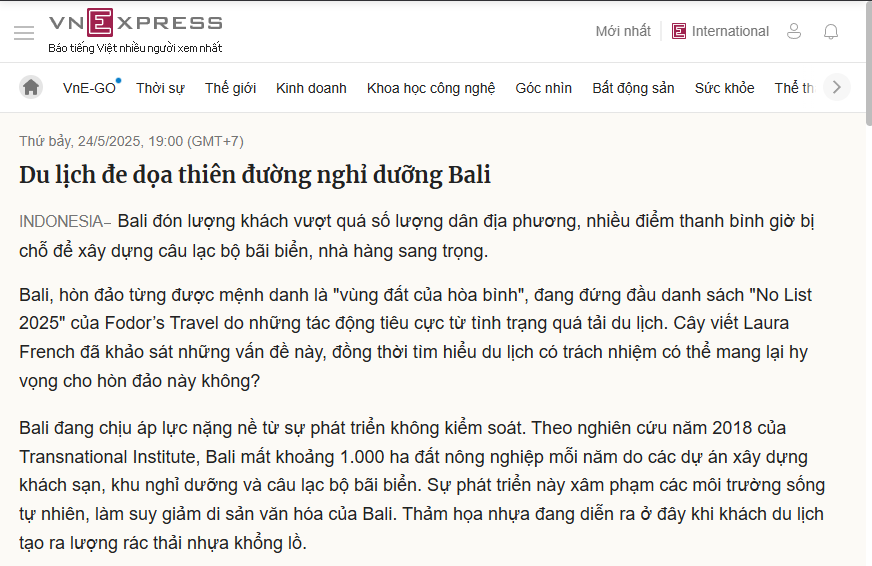
Áp lực từ du lịch tại Bali (Indonesia)
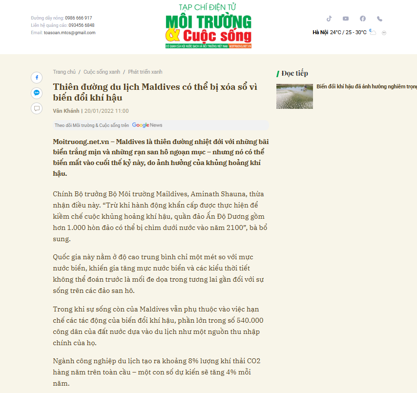
Nguy cơ Maldives bị xóa xổ
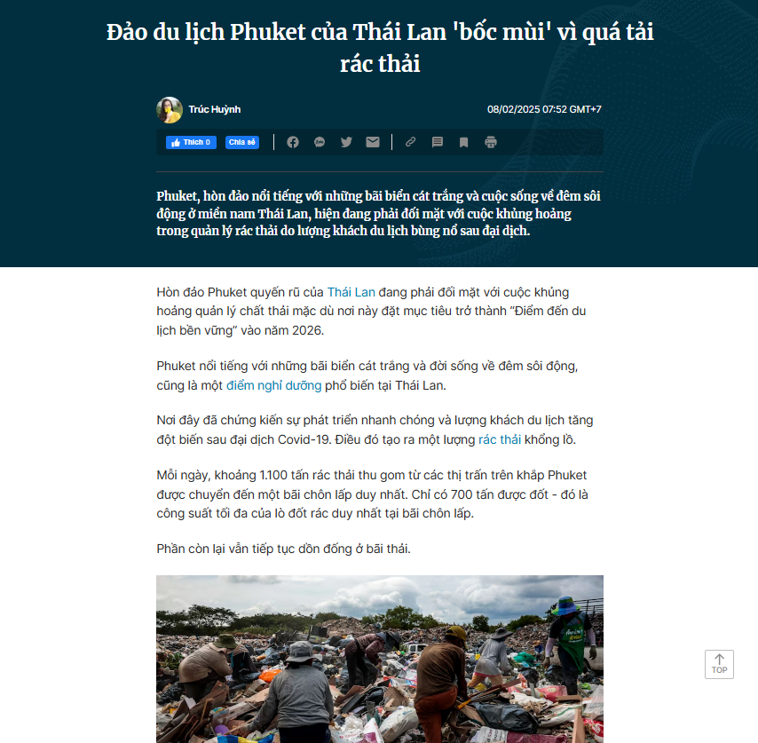
Khủng hoảng tại Phuket (Thái Lan)
Việt Nam là một trong những quốc gia có tiềm năng du lịch biển đảo lớn ở khu vực Đông Nam Á, với đường bờ biển dài hơn 3.260 km. Trong hơn 20 năm qua, cùng với chính sách mở cửa và hội nhập, ngành du lịch Việt Nam phát triển mạnh mẽ, đóng góp quan trọng vào GDP quốc gia. Hàng loạt khách sạn, resort cao cấp được xây dựng ở các điểm đến nổi tiếng như Hạ Long, Nha Trang, Phú Quốc, Đà Nẵng… giúp thu hút hàng triệu lượt khách mỗi năm.
Tuy nhiên, tình trạng phát triển nóng và thiếu quy hoạch bền vững cũng gây ra nhiều hệ quả: rừng ngập mặn bị chặt phá để xây resort, bãi biển bị bê tông hóa, hệ sinh thái biển bị xâm hại, cùng với đó là vấn đề xử lý rác thải và nước thải chưa triệt để. Những vấn đề này cho thấy sự mâu thuẫn giữa mục tiêu kinh tế ngắn hạn và phát triển du lịch bền vững lâu dài.
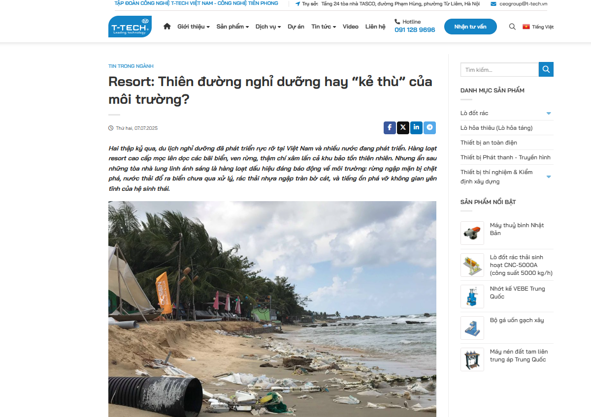
Áp lực từ du lịch tại Bali (Indonesia)
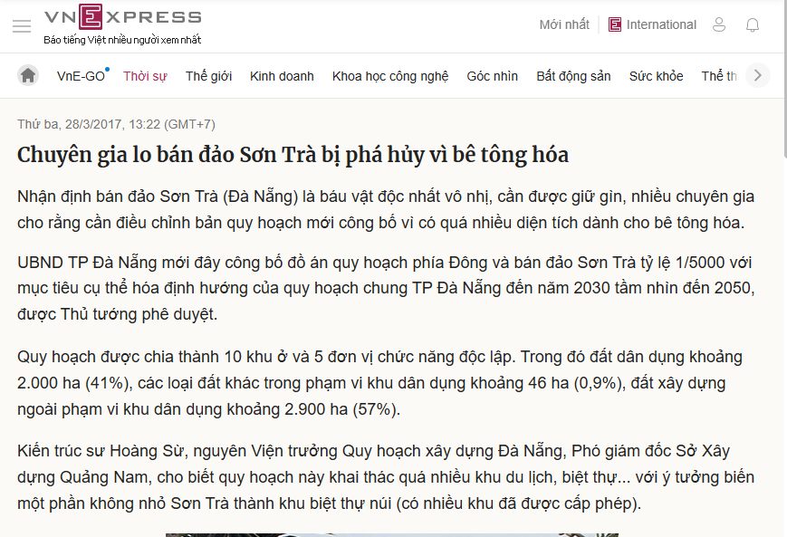
Nguy cơ Maldives bị xóa xổ
Là một trung tâm du lịch hàng đầu Việt Nam, Đà Nẵng nổi tiếng với bãi biển Mỹ Khê, bán đảo Sơn Trà và nhiều điểm du lịch tự nhiên. Trong hơn một thập kỷ qua, thành phố đã chứng kiến sự bùng nổ xây dựng khách sạn và khu nghỉ dưỡng, đặc biệt là dọc tuyến ven biển từ Sơn Trà – Ngũ Hành Sơn đến Hội An. Điều này góp phần quan trọng vào việc đưa Đà Nẵng trở thành “thành phố đáng sống”, điểm đến quốc tế hấp dẫn.
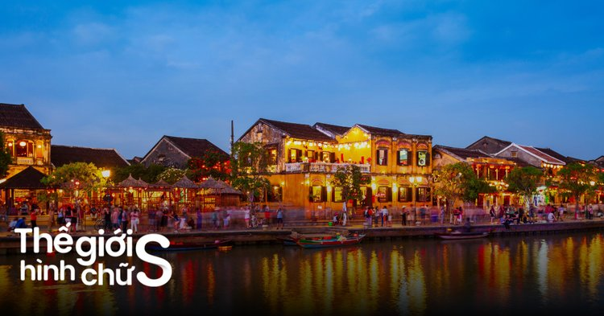
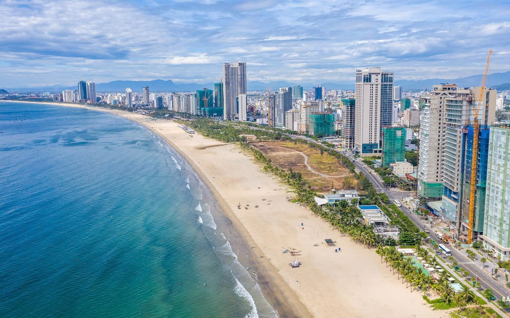
Tuy nhiên, cùng với sự phát triển mạnh mẽ, môi trường tự nhiên của Đà Nẵng đang chịu nhiều áp lực:
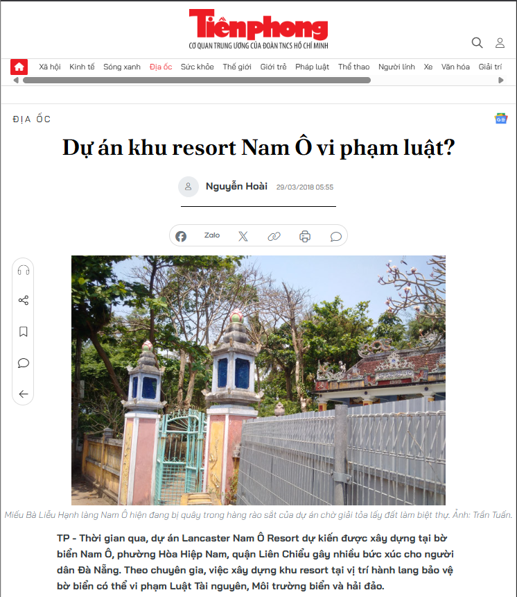
Dự án khu resort Nam Ô vi phạm luật
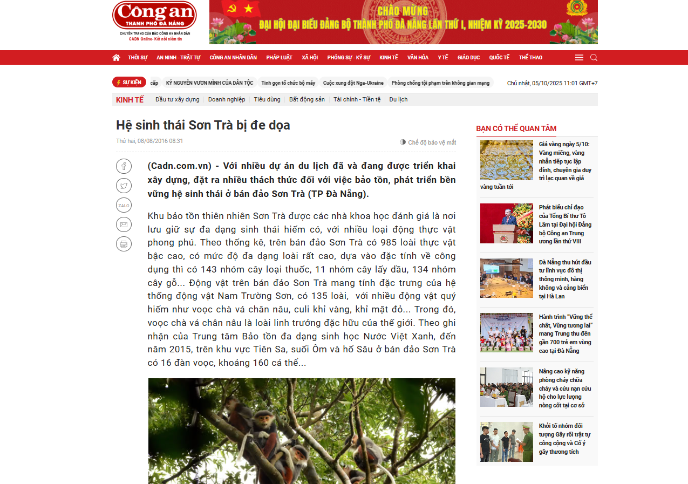
Loạt dự án sai phạm ở bán đảo Sơn Trà, biệt thự bỏ hoang trên bán đảo Sơn Trà
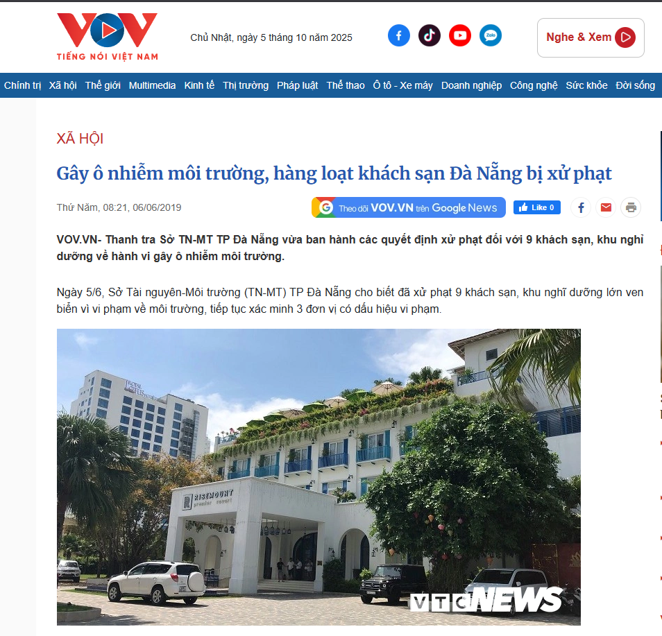
Hàng loạt khách sạn bị xử phạt do gây ô nhiễm môi trường
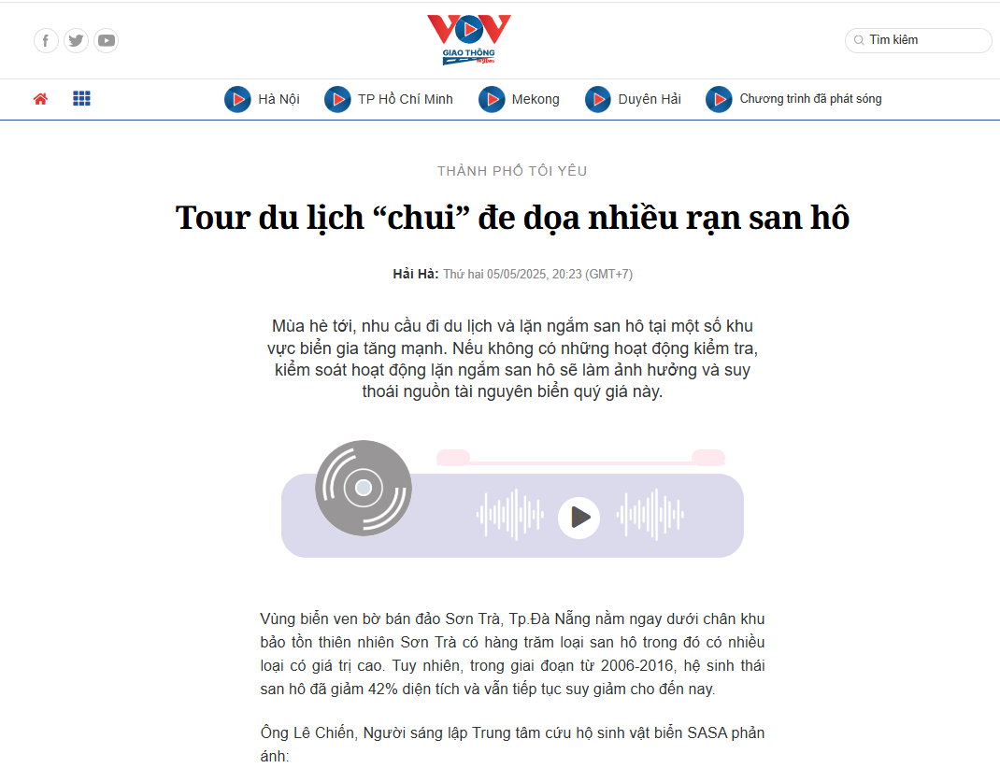
Rạn san hô bị đe doạ
Từ thực trạng này, việc nghiên cứu hệ quả tiêu cực của khách sạn và khu nghỉ dưỡng đối với tự nhiên trong hoạt động du lịch và đề xuất giải pháp phù hợp cho Đà Nẵng là cần thiết, nhằm hướng đến phát triển du lịch bền vững, vừa đáp ứng nhu cầu du khách, vừa bảo tồn giá trị thiên nhiên lâu dài.
{kind=link}
{kind=link}